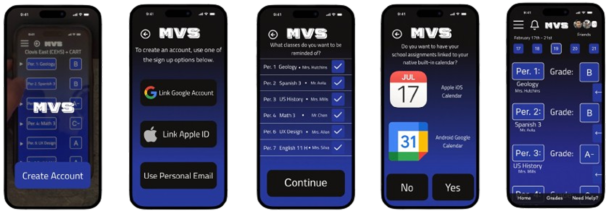
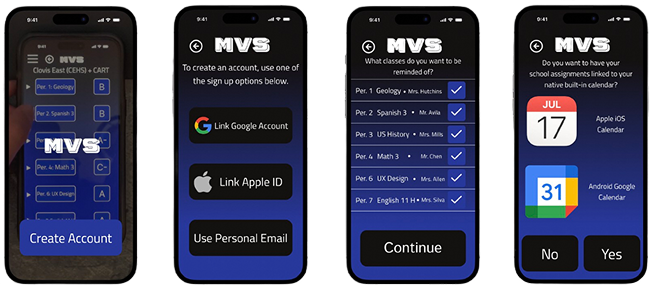
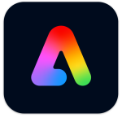
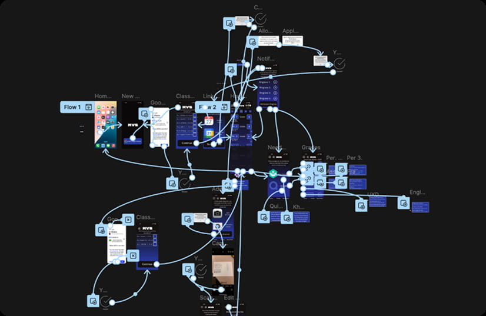
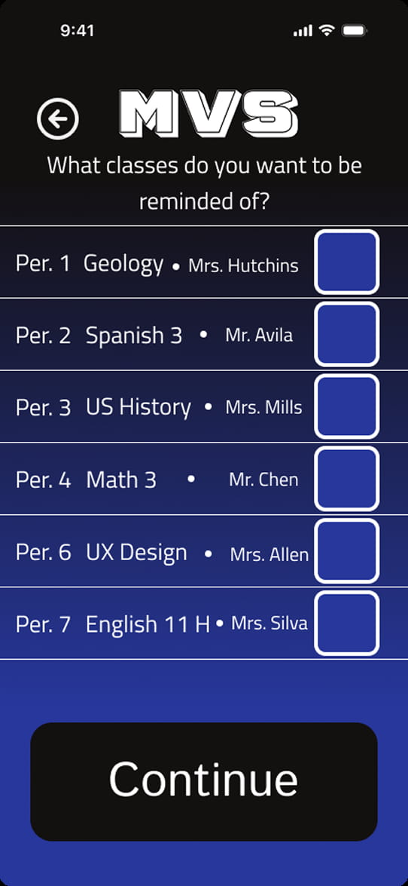
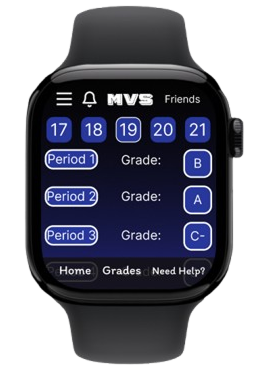
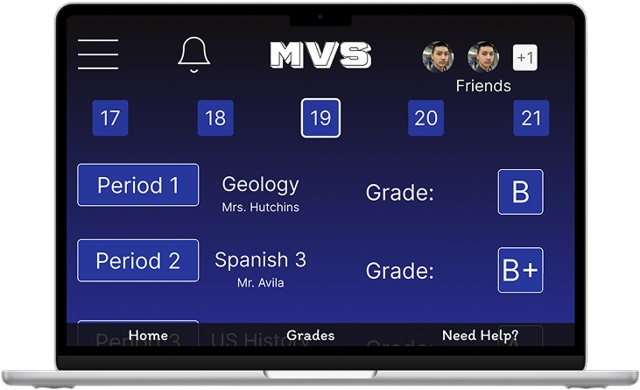
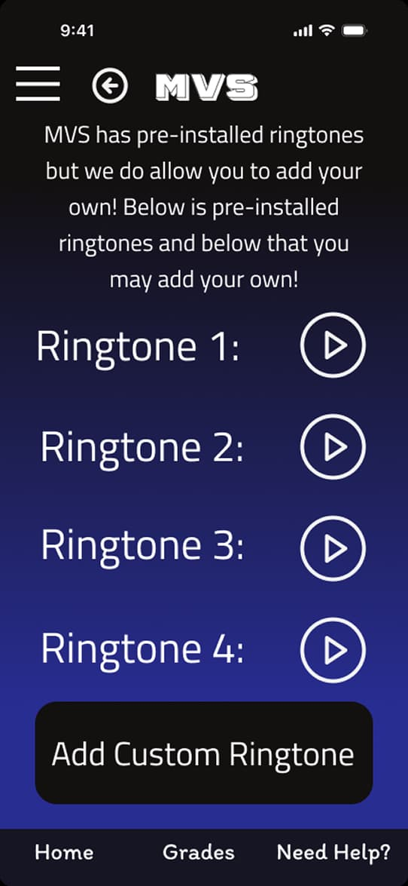
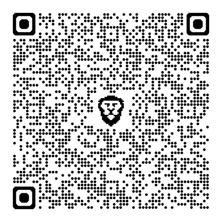

MVS hi-fi mockups designed and prototyped by Mateo Siechert
UI Designer • UX Designer
Project Leader • Web Developer • UX Designer

Mateo Siechert (Solo)

MVS hi-fi mockups designed and prototyped by Mateo Siechert
Applications Used

MVS prevents a user from procrastinating on their schoolwork by providing all the resources to stay on track with assignments. This application allows students to sync their Q Student Connect account to check their grades and connect not just one, but two school email accounts to sync Google Classroom assignments in one place.

Developer Bias: As a high school student while developing the application, I had some bias into what might be the best answer to student procrastination. To solve this issue I interviewed and surveyed potential students that may use this product and receive their feedback on what could be a great technique to solve student procrastination as a whole.



MVS Apple Watch & Desktop Mockup designed by Mateo Siechert


QR Code to access MVS